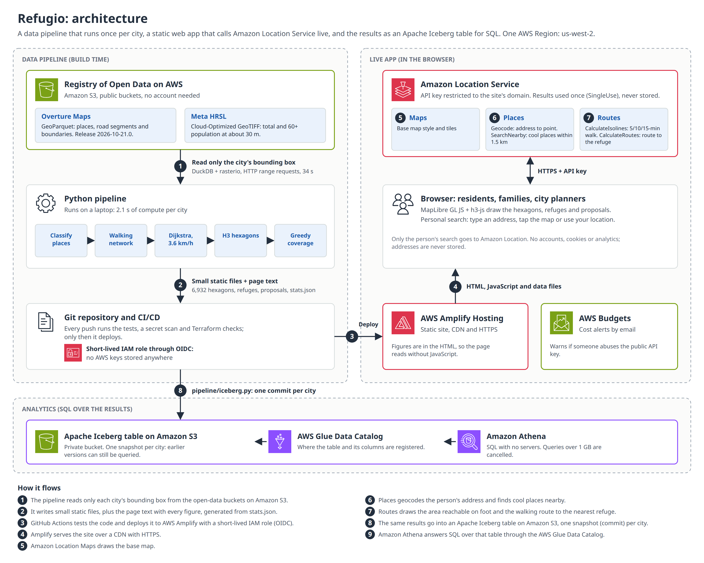
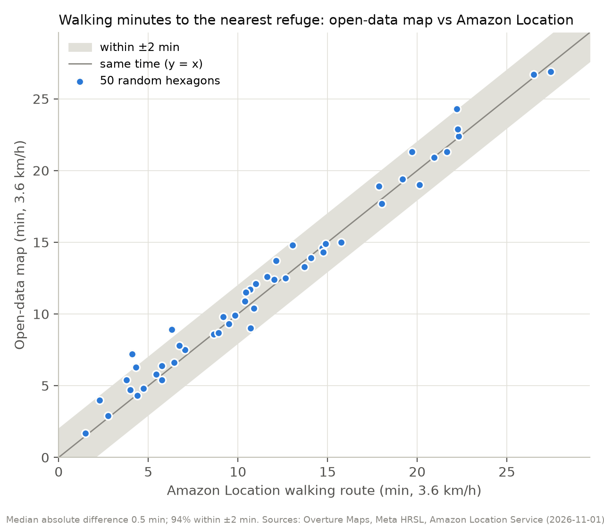

Refugio: how far do older adults have to walk in 45 °C heat to reach a cool place?
In Culiacán, Mexico, 17,441 older adults (60+), 31.4% of the 55,485 who live in the city, are more than a 15-minute walk from the nearest air-conditioned place where they can stay without buying anything, according to open data (places from Overture Maps, population from Meta HRSL). Refugio maps that walking time for every block-sized hexagon, shows where cool refuges are missing, ranks the existing public buildings that could open as refuges, and gives anyone a live walking route from their own address with Amazon Location Service.
Key figures
| City | Older adults (60+) | More than 15 min on foot from a refuge | More than 15 min, counting pharmacies and convenience stores too | Within 10 min of a refuge: today → with 10 proposed public buildings |
|---|---|---|---|---|
| Culiacán, Sinaloa | 55,485 | 17,441 (31.4%) | 1,790 (3.2%) | 40.7% → 51.4% |
| Hermosillo, Sonora | 63,621 | 18,859 (29.6%) | 1,908 (3.0%) | 41.2% → 51.5% |
| Mexicali, Baja California | 61,403 | 16,242 (26.5%) | 1,801 (2.9%) | 44.1% → 51.9% |
Walking speed 3.6 km/h, along the real street network. Older adults are people aged 60 or more in the Meta/CIESIN High Resolution Settlement Layer, which counts about 30% fewer of them than Mexico's 2020 census (see the evidence below). A refuge is a mall, department store, large supermarket, library, museum, cultural or community center (air conditioning assumed from the type of place).
The problem
- Sinaloa ranked first in Mexico for heat-related illness cases in epidemiological week 32 of 2026 (20 cases, Mexico's Health Ministry). Source.
- Mexico recorded at least 121 deaths from extreme temperatures between March and August 2026. Source.
- Culiacán reaches 45 °C in summer. Source.
- About 31% of Culiacán's city buses had no air conditioning in 2024. Source.
An older adult without a car walks to wherever they can cool down. A radius on a map says nothing about how far that is on foot: rivers, highways and dead-end streets make the real walk longer. Refugio measures the walk along the streets and counts who lives at each distance.
What you can explore on the map
- Walking-time hexagons. Each H3 hexagon (about 1.5 ha) is colored by the minutes on foot to the nearest refuge, in 5 bands: ≤5, 5–10, 10–15, 15–20 and more than 20 minutes. Lighter is closer.
- Refuges only, or refuges plus quick stops. A switch adds pharmacies and convenience stores, where you can step in for a moment and buy water.
- Where older adults live. A filter hides hexagons with fewer than 10 older adults.
- Where refuges are missing. The areas with the most older adults more than 15 minutes away; tap one to fly there.
- Proposed refuges. The 10 existing public buildings that would bring the most older adults within a 10-minute walk, numbered on the map.
- From your home. Type an address, tap the map or use your location. Amazon Location draws the area you can reach on foot in 5, 10 and 15 minutes, the walking route to the nearest refuge, and the cool places it knows nearby. Three example buttons start a search in the areas with the biggest gaps.
- Three cities. Culiacán (Sinaloa), Hermosillo (Sonora) and Mexicali (Baja California), built with the same pipeline.
The data
| Dataset | What it gives | Version | License |
|---|---|---|---|
| Overture Maps places | Points of interest with category, brand and confidence: the refuges, quick stops and candidate public buildings | Release 2026-10-21.0 | CDLA Permissive 2.0, Apache 2.0, CC0 (by source) |
| Overture Maps transportation (segments) | Streets and their connectors: the walking network | Release 2026-10-21.0 | ODbL, © OpenStreetMap contributors |
| Overture Maps divisions | City limits (Culiacán) and municipality and neighborhood names | Release 2026-10-21.0 | ODbL, © OpenStreetMap contributors |
| Meta HRSL general and elderly 60+ | Total population and people aged 60+ at about 30 m resolution | Latest (Cloud-Optimized GeoTIFF) | CC BY 4.0, Meta and CIESIN – Columbia University |
Both datasets are on the Registry of Open Data on AWS, in Amazon S3. Only each city's bounding box is read, with HTTP range requests, so a city downloads in about 40 seconds instead of pulling global files.
How it's put on the map

- Read from S3. DuckDB queries the Overture GeoParquet files by bounding box; rasterio reads only the needed window of the HRSL Cloud-Optimized GeoTIFFs.
- Classify places. Overture categories plus brand names decide what is a refuge, a quick stop, a candidate public building or nothing. A documented exclusion list removes clear mistakes (banks labeled as malls, a prison labeled as a government office).
- Walking network. Road segments are split at their connectors into a graph; motorways are left out. In Culiacán, walking along the streets is a median 1.24 times the straight-line distance (5th-95th percentile: 1.09 to 1.71), which is why a radius on a map underestimates the walk.
- Population on H3. HRSL pixels are summed into H3 resolution-10 hexagons inside the study area.
- Walking minutes. One multi-source Dijkstra run gives every hexagon the walk to the nearest refuge door, at 3.6 km/h, a conservative speed for an older adult in the heat.
- Proposals. A greedy maximum-coverage algorithm picks, one at a time, the existing public building (public schools, district offices, community and sports centers) that brings the most older adults within 10 minutes.
- Web. The results are small static files (hexagons, refuges, proposals and statistics) drawn in the browser with MapLibre GL JS and h3-js on an Amazon Location base map, and hosted on AWS Amplify.
Pipeline volumes, per city
| City | Places read → classified | Street segments → walking network | Population → hexagons | Candidates → proposals | Download + compute time |
|---|---|---|---|---|---|
| Culiacán | 28,002 → 211 refuges, 366 quick stops, 196 candidates | 49,024 → 39,069 nodes, 57,276 edges (4,567 km) | 90,767 populated pixels → 6,932 hexagons | 196 → 10 | 34.1 s + 2.1 s |
| Hermosillo | 34,233 → 218 refuges, 455 quick stops, 243 candidates | 56,286 → 48,330 nodes, 67,950 edges (5,350 km) | 93,872 populated pixels → 7,478 hexagons | 243 → 10 | 38.3 s + 2.3 s |
| Mexicali | 39,744 → 259 refuges, 666 quick stops, 336 candidates | 53,732 → 41,840 nodes, 61,805 edges (5,800 km) | 114,752 populated pixels → 9,504 hexagons | 336 → 10 | 40.6 s + 2.5 s |
Times measured on a laptop on a home connection: the download reads from Amazon S3, the compute step runs locally.
AWS services
| Service | Used for | Why |
|---|---|---|
| Registry of Open Data on AWS (Amazon S3) | Overture Maps and Meta HRSL, read by bounding box | Open, global data in cloud-native formats: the same code works for any Mexican city. |
| Amazon Location Service: Maps | Base map (vector style, API key) | No tile server to run. |
| Amazon Location Service: Places | Geocode (address search) and SearchNearby (cool places near you) | Up-to-date commercial places that complement Overture. Used as SingleUse: results are never stored. |
| Amazon Location Service: Routes | CalculateIsolines (5/10/15-minute walk) and CalculateRoutes (walking route) | Pedestrian routing from the exact address, which can't be precomputed for every home. |
| AWS Amplify Hosting | Static site with CDN and HTTPS | Deployed by GitHub Actions with OIDC, no stored keys. |
| AWS Budgets | Cost alerts | Warns by email if the public API key is abused. |
The infrastructure (API keys restricted to this domain, Amplify app, budget and the GitHub deploy role) is defined in Terraform. Every push to main runs the tests, a secret scan and Terraform checks before deploying, and an uptime check runs every 3 hours.
Evidence: is the open-data map right?
For 50 random hexagons where older adults live in Culiacán, Amazon Location CalculateRoutes
(Pedestrian, 3.6 km/h) walked from the hexagon to the refuge the map says is nearest:
| Metric | Value |
|---|---|
| Median absolute difference | 0.5 min |
| 90th percentile of the difference | 1.7 min |
| Within ±2 minutes | 94% |
| Within ±5 minutes | 100% |
| Correlation | 0.99 |

What Overture is missing. In 10%
of those hexagons (home to 12% of the sampled older adults),
Amazon Location SearchNearby knows a refuge-type place at least 150 m closer. So the share of older
adults far from a refuge is probably somewhat lower than shown.
Spot-check. Of 15 random refuges, Amazon Location found 10 of 15 by name within 300 m, 8 of 15 with a compatible category.
Only these aggregate numbers were kept; the Amazon Location responses were not stored.
How many older adults? HRSL vs the 2020 census. INEGI's census (ITER 2020) counts a larger share of people aged 60+ in each city than HRSL does in our study area. If HRSL misses older adults evenly, the shares on the map hold, but the counts are low:
| City | Aged 60+, census 2020 (city) | Aged 60+, HRSL | Older adults more than 15 min away: HRSL → with the census share |
|---|---|---|---|
| Culiacán | 10.9% | 7.7% | 17,441 → about 24,700 |
| Hermosillo | 11.4% | 7.8% | 18,859 → about 27,400 |
| Mexicali | 11.4% | 7.9% | 16,242 → about 23,600 |
Where refuges are missing
Culiacán
| Area | Older adults more than 15 min away | Median walk |
|---|---|---|
| Díaz Ordaz / Libertad | 6,006 | 21 min |
| Alturas del Sur / Guadalupe Victoria | 3,677 | 21 min |
| Las Quintas / Hidalgo | 2,896 | 18 min |
| Alameda / Los Mezcales | 722 | 38 min |
| Santa Elena / Villa Fontana | 708 | 19 min |
Hermosillo
| Area | Older adults more than 15 min away | Median walk |
|---|---|---|
| Solidaridad / Villa del Real | 6,199 | 26 min |
| Buena Vista Sección Amanecer | 4,612 | 21 min |
| North area, 4.0 km from downtown | 2,168 | 17 min |
| Northeast area, 3.4 km from downtown | 1,837 | 23 min |
| South area, 8.2 km from downtown | 824 | 26 min |
Mexicali
| Area | Older adults more than 15 min away | Median walk |
|---|---|---|
| East area, 3.0 km from downtown | 3,511 | 22 min |
| Southwest area, 3.9 km from downtown | 1,481 | 25 min |
| Los Alamos International Center | 1,419 | 23 min |
| Northwest area, 5.3 km from downtown | 1,203 | 19 min |
| East area, 8.8 km from downtown | 823 | 23 min |
10 public buildings that could open as refuges in Culiacán
| # | Building | Type | Older adults newly within 10 min |
|---|---|---|---|
| 1 | Primaria “Pdte. Lic. Adolfo López Mateos” | Public school | +731 |
| 2 | Escuela Primaria 22 de Diciembre | Public school | +722 |
| 3 | Difusión Cultural Preparatoria Sandino | Public school | +679 |
| 4 | Escuela Primaria Héroe De Nacozari | Public school | +672 |
| 5 | Jardín de Niños Juan de Dios Bautista | Public school | +658 |
| 6 | Eti #50 | Public school | +559 |
| 7 | Jardin de Ninos Luz Maria Serradel | Public school | +559 |
| 8 | Escuela Primaria Agustin Melgar | Public school | +493 |
| 9 | Unidad Académica Preparatoria Central Nocturna | Public school | +449 |
| 10 | Escuela Primaria Vicente Guerrero | Public school | +437 |
With these 10, older adults within a 10-minute walk of a refuge go from 40.7% to 51.4% (+5,959 people). "Public" is inferred from the building's name, not from an official registry.
Limitations
- Air conditioning and free entry are assumed from the type of place, not checked one by one.
- Overture doesn't list every place (it has few convenience stores), so real access is probably better than shown.
- HRSL counts about 30% fewer people aged 60+ than Mexico's 2020 census (7.7% vs 10.9% in Culiacán), so the counts of older adults are probably low; the shares are not affected if the gap is even across the city. See the evidence above.
- Shade, sidewalks, safety and opening hours are not modeled: malls close at night, and the heat peaks from 2 to 5 pm.
- The map doesn't know who has a car. The walking speed is an assumption; Amazon Location isolines use the service's default pedestrian speed, which can't be set.
- The natural next step is an official refuge network validated with the city.
Privacy
No accounts, cookies or analytics. Addresses are never stored, and your location is only requested if you press the button.
Sources and licenses
- Overture Maps Foundation, release 2026-10-21.0: transportation and divisions (ODbL, © OpenStreetMap contributors); places (Meta and Microsoft, CDLA Permissive 2.0; Foursquare, Apache 2.0; AllThePlaces, CC0).
- Meta and CIESIN – Columbia University, High Resolution Settlement Layer (CC BY 4.0).
- Base map: Amazon Location Service.
- Code: MIT. Derived data in
web/data/: ODbL. github.com/Josegas/Refugio-mapa-de-refugios-contra-el-calor